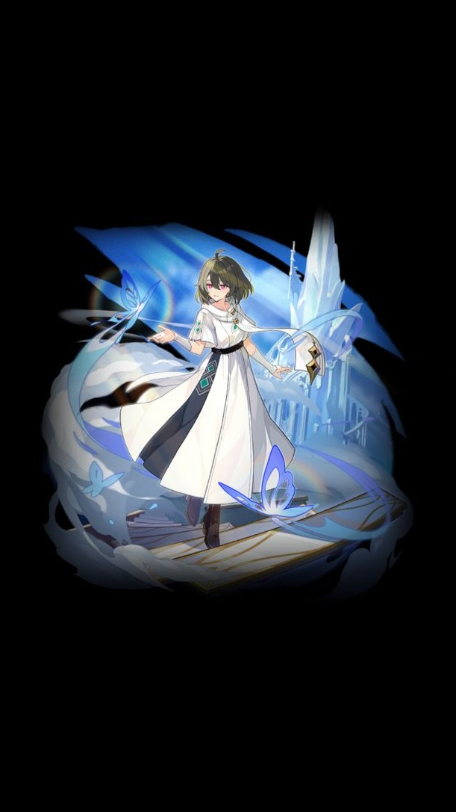
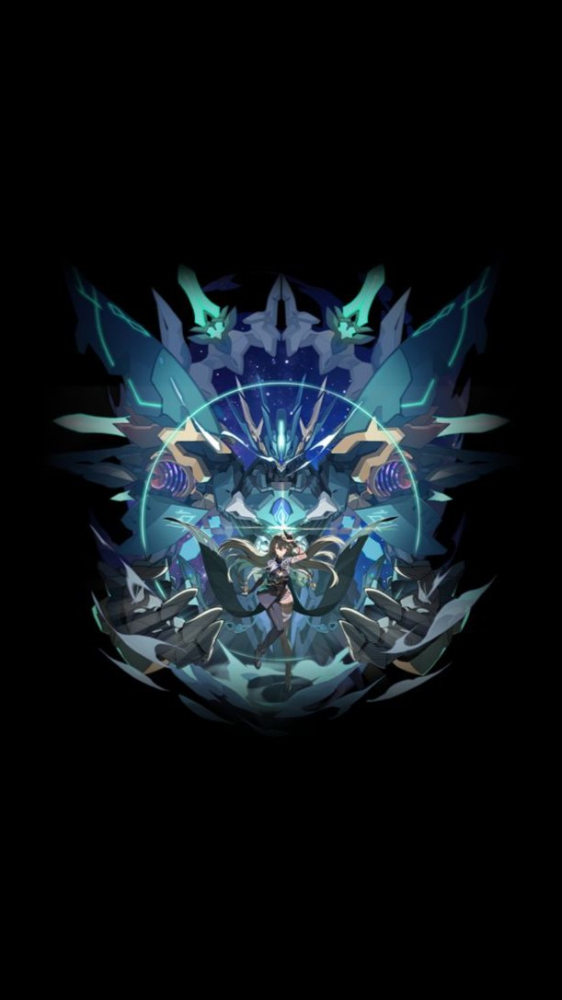
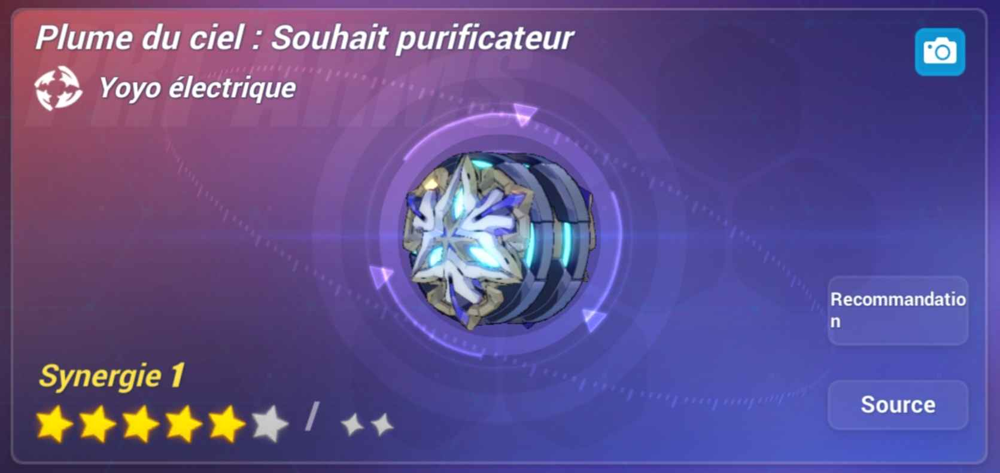

Vita; Lone Planetfarer (T): Le personnage inflige 40% de DMG de foudre en plus.
Lorsqu'elle est équipée par Lone Planetfarer : Quand Lone Planetfarer a "I love everyone", les ennemis subissent 30% de DMG d'éclairs supplémentaires à leurs attaques.

Vita; Lone Planetfarer (M); Le personnage subit 20% de dégâts en moins. Lorsqu'il est équipé par Lone Planetfarer : Les personnages avec "I love everyone" subissent 15% de DMG élémentaires en plus.

Vita: Lone Planetfarer (B); Le personnage inflige 30% de DMG supplémentaires. Lorsqu'il est équipé par Lone Planetfarer : Les personnages avec "I love everyone" infligent 12% de DMG physiques en plus.

Feathers of Illumination: Le CD, les charges maximales et les effets de l'actif de l'arme sont basés sur le type du porteur. Lorsqu'un personnage protégé par Rite d'oubli est dans l'équipe, le personnage inflige 13,7% (20% à 6★) de DMG totaux en plus.
Lorsqu'elle est équipée par Lone Planetfarer :
● l'ATK de base amélioré SEQ 3 en forme de voyageur solitaire et en forme de quaker planétaire inflige 158,5%/390% (300%/500% à 6★) d'ATK de DMG de foudre.
● En entrant en combat, consommer Drain stellaire pour la première fois avec un ATK combo restaure 15 bonus d'intensité de l'anneau astral. Désactivé lors de l'activation de Déflagration stellaire.